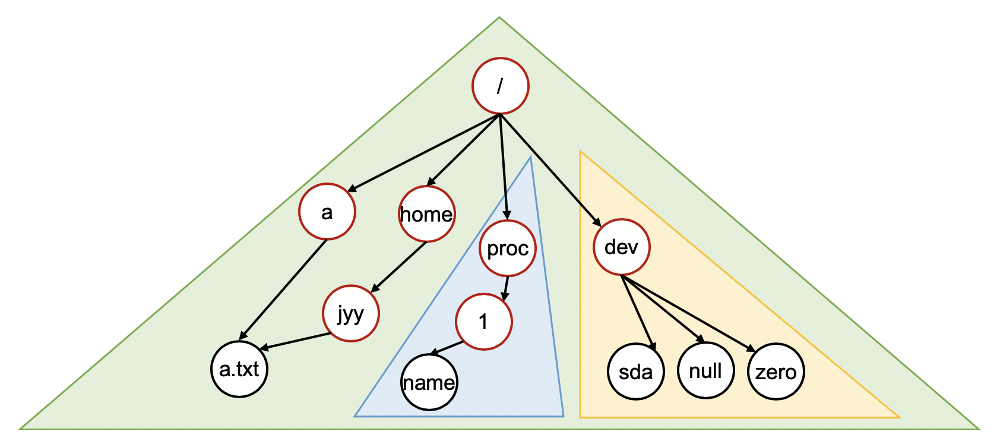
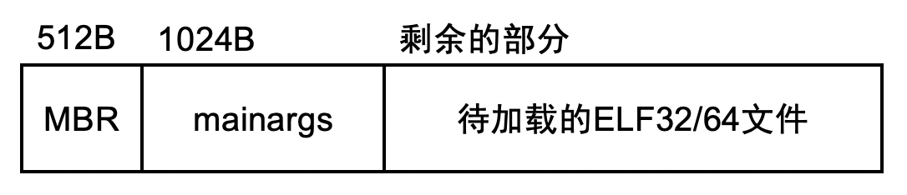

操作系统-设计与实现-九
前言
这个系列终于到最后一篇博客了。
感慨颇深!
L3 虚拟文件系统(vfs)
实验背景
在这个实验中，我们在多处理器分时多线程的基础上，实现线程安全的虚拟文件系统(virtual file system, VFS)API，并且在VFS这一抽象层上实现若干不同的文件系统：
- 在存储设备(sda)上支持完整文件和目录操作的文件系统ultra-simple file system(ufs)
- 虚拟的procfs，提供一系列只读的、反映操作系统内部状态的文件
虚拟的devfs，将操作系统中的设备抽象为可以访问的文件，并为这些文件提供读写操作
实现完成后，系统中的多个线程就可以通过这些文件系统API，进行读写文件操作——至此离现代操作系统就只有一步之遥：只需要为每个线程附属一个独立的地址空间(通过虚拟存储实现)，线程就变成了熟知的进程，操作系统就完整了。
实验描述
实验总览
这个实验在pmm和kmt的基础上，在磁盘设备(驱动程序)的基础上实现持久的文件系统，并且在线程级别支持文件描述符和文件/目录操作API——vfs的API和MiniLabs中使用的系统调用几乎完全一样——在Linux中，进程通过syscall进入操作系统后会直接调用这些函数
注意：本实验需要设备驱动程序部分正常工作
在Lab3中，需要合并Lab2的官方测试用例(dev以及若干设备驱动的实现)。但即便kmt的实现有问题(例如终端设备在时钟作用下有一定的异常)，可以通过尝试注释掉线程创建的代码和中断处理程序的注册，从而进行调试本实验的文件系统API做了相当的简化，例如不支持动态的mount(文件系统在系统启动时被mount)。具体来说，需要实现以下的API
2
3
4
5
6
7
8
9
10
11
12
13
14
15
MODULE(vfs) {
void (*init)();
int (*write)(int fd, void *buf, int count);
int (*read)(int fd, void *buf, int count);
int (*close)(int fd);
int (*open)(const char *pathname, int flags);
int (*lseek)(int fd, int offset, int whence);
int (*link)(const char *oldpath, const char *newpath);
int (*unlink)(const char *pathname);
int (*fstat)(int fd, struct ufs_stat *buf);
int (*mkdir)(const char *pathname);
int (*chdir)(const char *path);
int (*dup)(int fd);
};注意到本实验的框架中还提供了framework/user.h，这个文件是用户进程(假想有的话)/内核之间共享的，其定义了诸如
struct ufs_stat，以及若干函数参数的含义，和目录文件的格式。例如whence中的SEEK_SET、SEEK_CUR和SEEK_END：
2
3
4
5
6
7
8
9
10
11
12
13
14
15
16
17
18
19
20
struct ufs_stat {
uint32_t id, type, size;
};
struct ufs_dirent {
uint32_t inode;
char name[28];
} __attribute__((packed));
请不要修改上述框架中的定义，但文件系统的数据结构设计、县城同步等，都可以自由发挥！虽然文件系统的实现原理简单，但实现文件系统的工作量足够大(而且要小心处理很多对象的生命周期和error handling)，请做好调试代码的心理准备VFS(Virtual File System)模块
线程安全性
注意，除了模块的初始化(init)之外，系统中创建的线程都可以并发地访问操作系统中的对象——但注意每个线程都有一份文件描述符的副本模块初始化
vfs->init()负责初始化必要的数据，例如根文件系统的创建等。本实验预期会在os->init()时调用vfs->init()。整个系统启动只调用一次vfs->init()
目录结构
在Lab3中，实验需要实现树状的目录结构，三个文件系统的实现：
- 通过/，访问ufs，ufs管理磁盘设备sda。ufs支持文件系统内的链接(linking)
- 通过/proc可以访问procfs。procfs为每一个线程(之后的进程)创建一个目录，目录中可以提供该线程(进程)的信息，例如可以通过/proc/1/name来获取线程的名称
- 实验预期通过/dev访问devfs，例如通过/dev/sda，用文件系统API直接读写磁盘上的数据
可以理解为，实验中的vfs->init()需要完成/proc和/dev的挂载——但不需要实现mount/unmoount的API，因此可以在适当的时候“硬编码”，以减少代码的复杂度。
文件系统的目录树看起来和Linux有一定的相似性(红色的节点表示目录，黑色的节点表示文件，三角形表示文件系统)
路径与文件描述符
2
3
int (*open)(const char *pathname, int flags);
int (*close)(int fd);在本实验的操作系统中，每个线程都有一个“当前目录”，指向文件系统中的一个存在的目录(假设实验中不会删除任何进程的当前目录，虽然实际的系统中在这种情况下有defined behavior)。之后的线程执行所有的API(chdir,open，read，link，unlink，mkdir)时，如果路径不是以/开头，则相对于当前路径进行路径解析。例如，如果当前目录是/proc，那么1/name就是一个合法的路径(指向/proc/1/name)
- chdir改变当前线程的当前路径为path；成功返回0
- open打开path，允许的打开方式flags定义在user.h:
- O_RDONLY：只读
- O_WDONLY：只写
- O_RDWR：可读可写
- O_CREATE：如果文件不存在则创建
如果打开成功，返回一个非负整数编号的文件描述符(最小的未使用的文件描述符)。文件描述符是指向操作系统对象的指针，并且可以通过文件描述符访问这个对象- close关闭一个文件描述符
与UNIX文件系统的区别
注意允许open以只读的方式打开目录文件。在本系统的ufs中，目录文件以二进制形式存储struct ufs_dirent的数组中，从而可以获得目录中文件的列表，从而无需readdir(getdents)系统调用目录和文件操作
2
3
4
int (*link)(const char *oldpath, const char *newpath);
int (*unlink)(const char *pathname);
int (*fstat)(int fd, struct ufs_stat *buf);
- 目录管理的API是mkdir(创建目录)、link(创建文件的链接)、unlink(删除链接)，行为和Linux/教科书保持一致，注意路径名如果不是以/开头，需要以当前线程的工作目录进行相对解析。注意只有磁盘上持久的文件系统支持链接——不需要为procfs或devfs支持链接
- 对一个打开的文件，可以使用fstat查看文件的属性，struct ufs_stat定义在user.h：
- id是编号(>=1)
- type是T_DIR(目录)或T_FILE(文件)，其他数值为非法
- size是文件大小的字节数。对于目录文件(目录项的数组)，大小总是struct ufs_dirent大小的整数倍
文件描述符操作
2
3
4
int (*read)(int fd, void *buf, int count);
int (*lseek)(int fd, int offset, int whence);
int (*dup)(int fd);把文件描述符看成是访问操作系统对象的“指针”，文件描述符上的操作就非常容易理解：read、write会从文件描述符内置的游标(offset)中读取数据，并相应更新offset，leek会改变游标的位置，其中whence(user.h)：
- SEEK_CUR：从当前位置开始
- SEEK_SET：从头部开始
- SEEK_END：从尾部开始。此时offset为0将会读到EOF(end-of-file)
dup复制一份共享offset的文件描述符，返回最小可用的文件描述符。这些行为都和Linux一致
挂载的文件系统
- ufs
ufs是建立在设备sda(磁盘)上的持久数据结构。设备驱动提供了对sda的读写操作。本实验需要支持在ufs中创建目录、文件和链接
ufs默认挂载在/，即除了/proc和/dev中的文件和目录之外，其他的文件和目录都属于ufs；注意，如果使用open打开/(ufs)，并且读取其中的目录项，则应该可以读到dev和proc两个目录，但他们的inode编号并不重要
使用目录管理/文件系统的API，可以修改ufs文件系统的结构，并且这些修改会最终被持久化到磁盘上——ufs是磁盘上(sda)设备的文件系统，实验要求将这一数据结构翻译成对I/O设备的读/写操作。注意实验的dev模块已经完成了对磁盘的封装，将磁盘封装成了一个字节序列，可以支持任意位置的读写——这可能会简化变成，但要注意非对齐的读/写会引起额外的I/O操作——例如希望写入磁盘的某个字节，会导致包含该字节的数据块被读取，然后再次被写入。
因此该实验系统可以在文件系统中实现一层基于数据块(块大小可以自行决定，例如4KiB)的缓存- procfs
procfs是虚拟的文件系统，不涉及任何设备。不支持在procfs中使用vfs API创建文件/目录/链接。procfs中的目录(/proc本身，以及形如/proc/[id]的目录)需要支持fstat和read操作，能读出正确的大小(struct ufs_stat中的size字节数)，和struct ufs_dirent结构体
procfs好像是“挂载”在/proc下，procfs中的目录是所有线程的编号。每个线程对应的目录里至少有一个“name”文件，读取该文件，可以获取现成的名称。
proc的目录和文件会根据线程的创建/删除动态变化。因此要小心如下情况：
- 使用open打开/proc后，读取到编号为10的进程；
- 打开/proc/10/name成功;
- 此时线程结束退出
无论read是返回EOF，亦或是仍然成功都是合理的；但是操作系统不能因此crash- devfs
devfs是虚拟的文件系统，不涉及任何设备。不支持在devfs中使用vfs API创建文件/目录/链接
devfs好像是“挂载”在/dev下，devfs中至少需要包含以下文件：
- zero(/dev/zero)：只读，永远返回0的序列
- null(/dev/null)，读永远返回EOF，写数据直接成功(丢弃)
- random(/dev/random):只读，返回随机的字节序列
同procfs，可以使用vfs的API打开、读取和写入这些文件mkfs工具
你一定留意到tools/mkfs.c这个文件了，实验中需要实现该mkfs工具，其接受三个参数size、img和dir，将文件系统中的目录dir中的所有目录和文件“打包”到img镜像文件中，并将镜像文件的大小设置为size MB。
注意AbstraceMachine磁盘镜像有固定的格式
只有在kernel的ELF文件之后的空间才是可用的。为了在磁盘上建立文件系统，有两种可行的方法，可以任意选择:
- 文件系统的第一个block从固定的位置开始，例如1MiB的位置
- 文件系统的第一个block由ELF文件决定，例如直接在ELF文件之后。需要将该block的编号(例如扇区号)写入到磁盘的引导扇区(第一个512字节)中
IO坑
在实现文件系统的过程中，可能会遇到各种各样的小麻烦，例如首先遇到的坑就是mkfs需要将文件“pad”到指定的大小，磁盘才能正常写入。如果镜像文件只有1MiB，那么读取之后的文件，都将得到0
每个进程都有“当前路径”，通常是文件系统的一个合法目录(至少在chdir返回的瞬间，否则chdir应该返回失败)。但是，系统中的其他线程(甚至当前线程)可能将这个目录删除。此时，系统的行为是什么？如果再考虑到inode的回收，会发现这件事远比想象地要困难的多。因此，做对所有的error handling是个极具挑战的问题，甚至Linux Kernel都做得不够好
文件系统的API看似简单，但其实随处都充满了各种各样的坑(例如如何进行路径解析、如何将操作转发到对应的文件系统实现等)。因此，要特别留意项目代码的组织和设计，否则很快就会得到一个膨胀且难以维护的代码。
实验标准
文件系统实现
注意：调试输出
同上一个实验，请尽量不要打印多余的输出。虽然检查代码会进行一定的过滤，但因为多处理器的并发，在其他处理器上的输出可能会影响检查输出，从而导致Wrong Answer。因此建议使用自己的log或printk函数(而不是printf; 测试程序会使用printf)，且它们的行为由预编译指令控制，仅在本地编译时才打印数据
在这个实验中，会首先使用mkfs工具初始化文件系统，然后启动虚拟机、创建若干线程，连续调用文件系统API，根据文件系统API的输出决定你实现的正确性。执行的操作可能有一定的随机性，并且因为并发程序的不确定性，将会导致每次执行的结果都有一些不同，但你需要实现可串行化(serializable)的文件系统：文件系统操作的结果看起来像是所有执行过的文件系统操作排成某个顺序执行的。最简单的实现可串行化的方式就是为文件系统操作加上互斥锁，可以使用信号量的P/V操作实现。
注意：上锁的粒度
磁盘是慢速设备；一个文件系统的操作可能较长，使用自旋锁可能会导致中断丢失、饥饿等后果(饥饿意味着无法达到最小的性能要求从而Wrong Answer)。如果希望借用Lab2中的同步原语，请使用信号量实现的互斥锁，在线程无法获得锁时睡眠。
所有测试用例的文件系统调用均在使用kmt->create创建的线程中调用——因为文件描述符是线程的一部分，不会在操作系统启动/初始化/中断时执行对文件系统的操作。
数据的持久性
在这个实验中，不要求实现满足崩溃一致性的文件系统，也没有提供fsync的接口：实验假设操作系统的数据满足“eventual consistency”，即磁盘上的数据结构在没有更多操作到来时，会达到一致的状态。测试数据会在所有的磁盘操作之后等待一秒钟(1000ms)，然后关闭虚拟机。再次重启后，ufs文件系统中的数据应当被正确持久化，例如之前创建的目录和文件此时应该能够正确访问，能读取出正确的数据。如果使用了类似buffer cache的结构对磁盘的读写进行了缓存，请确保在在进行文件系统调用之后的1s内将数据持久化到磁盘。例如：
- 可以选择最简单的实现，即每个文件系统操作都立即写入磁盘，在最后一个系统操作返回时，磁盘即处于consistent的状态。
- 可以构建自己的缓存，有一个后台的daemon(类似jbd)完成磁盘的写回。建议写回的频率在500ms，这样有足够的时间将持久数据写入磁盘(虽然对于实际的系统，写回的频率会更低一些，以减少磁盘的带宽)
实验指南
在开始实现之前，再回顾一下这句话——文件系统是一个磁盘上的数据结构。
因此，就把文件系统当成是一个数据结构问题，用“抽象数据类型”去考虑它的实现即可
文件系统实现：基础
实现文件系统中最“基础”的操作，就是给定一个路径(绝对或相对当前线程的当前路径)，对路径进行解析，然后返回相应的inode。道理看起来很简单，但却涉及文件系统的各个部分，也许有些细节就是实现时未考虑到的。
首先，inode不仅是存储在磁盘上的数据结构(针对ufs而言)，还需要在内存中分配；虚拟的文件系统(例如procfs)还需要维护一些inode私有的内存数据(例如procfs)。这里会有多个小问题
- 在解析路径时，例如/this/is/a/very/long/path时，会经历多个inode的访问，例如/、/this、/this/is，…文件系统需要在这些inode上分别执行open操作，直到确定要打开的inode为止；
- 线程(进程)有自己的“当前目录”，所有涉及路径的系统调用，当给定的路径不是以/开头时，都是相对当前进程的“当前目录”进行解析的
- 打开的inode会历经各种操作，例如从文件系统中unlink。此时可能有一个进程持有该inode的文件描述符，并且正在向文件读写数据
只要在内存中实现struct inode, 必须小心地管理它的生存周期——当线程创建、销毁、文件关闭……各种时刻，都要小心地维护内存中的inodes，使得它们在不再使用时(或者是在可以释放后一段时间后)能被安全地释放，并且不引起double-free, use-after-free等问题。引用计数是个很好的机制，但必须要小心地管理引用——一旦某个引用发生复制时你忘记增加引用计数，就意味着程序里可能会出现严重的问题。
路径解析的核心是给定一个inode(假设已经载入内存，并且确保是一个目录文件)，然后读取这个目录文件中的目录项(通过文件系统的read操作)，找到名字匹配的inode编号，递归这个过程就能完成路径解析——我们也鼓励你实现成递归的，这会大大简化你的实现。
路径解析的另一个有趣的问题是处理/proc, /dev这样的挂载点(mount point)。应该实现一个通用的实现挂载的方案，这样文件系统能挂载到目录树的任何地方——Linux/UNIX的确就是这样实现的。
多个文件系统的共存
在路径解析的过程中，会发现实验中的每个文件系统的“数据结构”都不太一样：
- ufs的文件和目录都以一个类似UNIX文件系统的设计方式存储在磁盘上，因此对ufs文件和目录的修改需要翻译成sda设备上的读写操作；
- procfs的目录是动态创建的(并且不在持久存储上，而是根据当前的线程)，因此你需要遍历系统中的struct task，并且将线程信息写入缓冲区中，然后返回给对procfs的read；
- devfs的每个文件都有一个对应的设备(可能是虚拟的、可能是实际存在的)，对于实际存在的设备，需要调用设备的read/write;而对于虚拟的设备，需要向读者提供正确的数据，或是模拟向设备的写入。
实验中需要为每一个文件系统的都实现一套文件/目录的API——这也就是为什么这个实验显得复杂的原因。如果使用紧耦合的方式实现，项目代码很容易会陷入不可维护的泥潭；例如仅仅是写一个“代码框架”就已经在视觉上看起来不太友好了：
1
2
3
4
5
6
7
8
9
10
11
12
13
14
15
16
17
18
19
20
21
22
23
24
25
26
27
28
29int vfs_write(int fd, void *buf, int count) {
struct file *f = current->oflies[fd]; // 取出数据结构
struct dev *d;
if (!f) goto abort;
...
switch (f->inode->type) {
case FS_PROCFS:
...
break;
case FS_DEVFS:
d = getdev(f);
switch (d) {
case DEV_NULL:
...
case DEV_RANDOM:
...
default:
// 其他设备，转发给设备驱动
...
}
break;
case FS_UFS:
...
break;
}
...
abort:
...
}
因此，在这里有必要做一点“面向对象编程”。不妨把“文件系统”和“文件系统中的文件(包括目录文件)”都以对象的形式包装起来。实际上，整个实验的框架代码其实已经做了很多面向对象的封装了！例如整个操作系统的“模块”就是面向对象的，一个模块就是一个对象。另外一个值得大家参考的是实验对I/O设备进行的封装：1
2
3
4
5typedef struct devops {
int (*init)(device_t *dev);
ssize_t (*read) (device_t *dev, off_t offset, void *buf, size_t count);
ssize_t (*write)(device_t *dev, off_t offset, const void *buf, size_t count);
} devops_t;
这样之后，就可以进行“面向对象”的调用了:
1
d->ops->read(d, offset, buf, count) // d: pointer to struct dev
这样的写法在C++中可以更精简，例如C++的对象自带函数，可以省略“this”的调用。以及C++支持类的继承和虚函数——虚函数就是用类似devops_t实现的！每个对象的头部都有一个称为“vtable”的数据结构，指向了它虚函数实现的地址。
1
d.read(offset, buf, count); // d: reference of a Device object
也可以对文件系统/文件的操作做出类似的封装，可以大幅增加代码的可维护性，在阅读时也更容易梳理实现的正确性。
文件系统的实现
这里有很多微妙的坑(甚至测试用例无法完整地覆盖到它们)。例如，当遍历procfs时，需要遍历系统中所有的线程；而与此同时，线程可能被创建/回收。一个复杂系统的实现很容易在这种情况下产生数据竞争(几乎总是bug，例如可能会读取一个尚未初始化好的线程)或是死锁。这样的问题在测试中恰恰是很难暴露的：你很难会想到构造这样的测试用例，以及实际的系统可能会在更 subtle 的情况下出错
这里无法完整列举实验中所有可能遇到的坑——但在完成实验的过程中，一定会感叹做好一定的设计是多么重要。以及，无论做了多少设计，在实际中都可能遇到奇奇怪怪的问题，也真正理解了lockdep,AddressSanitizer/ThreadSanitizer这样的工具存在的必要性。总之在这个“编程大实验”会真正体会一些计算机系统设计/实现的困难。Happy hacking!
实验环境
切换到master分支，然后从github上拉去L3实验即可
1
git remote add jyy https://hub.fastgit.org/NJU-ProjectN/os-workbench.git && git checkout master && git pull jyy L3
实验实现
下面是个人的思路及其实现，实验实现